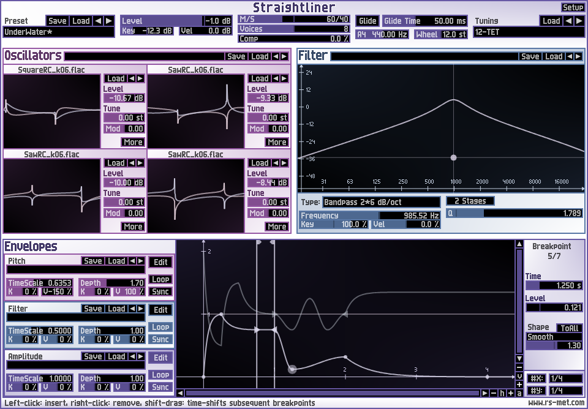

|  |
Key Features
|
|
Straightliner is a straight-lined and modern approach to subtractive synthesis. Instead of trying to faithfully emulate old analog synthesizers with all their physically imposed limitations, Straightliner takes full advantage of the extended possibilities that software based synthesis offers: the oscillators support loading of arbitrary (single cycle) audio files. Flexible modulation generators, which allow to define an arbitrary number of breakpoints, are available for pitch, filter-frequency and amplitude. The filter has a lot of different modes, among them the usual suspects like lowpass, highpass, bandpass and a sophisticated Moog-filter model. The whole signal path is laid out in stereo which allows for big and enveloping sounds even without any effects. The user interface of the synth focuses on visual editors instead of the commonly seen hardware oriented interfaces. |
|
{kind=link}
Demo Clips
...all well and good, but by far the most important aspect of a synthesizer is its sound, of course. I produced some democlips which were created by Straightliner only, playing one patch at a time without any post-processing. You may verify this yourself by reconstructing the demos with the StraightlinerDemoClipReconstructionPack.zip. It comprises the required MIDI files which you may import into you favourite DAW, then route the MIDI-track to Straightliner and load the appropriate patch into the synth. Most patches are factory-presets and in the other cases, the patch-file is also included in the reconstruction pack.
Let's start with some cliche-sounds - although Straightliner does not really define itself as
virtual analog, it can convincingly deliver that type of sound - here are a few examples of
Straightliner doing some typical dance/trance stuff:
002-SuperSaw1.mp3
TranceStabs.mp3
The multistage envelope generators can be used to create gated/patternized sounds:
050-TranceVoice.mp3
TrancyPattern.mp3
O.K. 'nuff trance-stuff - what else is there? Another popular and often requested sound is that
squelchy acid bass as pioneered by Roland's famous TB-303. Here's Straightliner's interpretation
of that kind of sound:
004-AcidPulse.mp3
how about a little bit of 1980's-Pop flavour:
001-80sSynthLead.mp3
018-SawLead2.mp3
and for those who are into the darker shades of electronic music:
016-NotchySuperSaw.mp3
019-SawLead3.mp3
042-SynthBass2.mp3
after all the (in my humble opinion, well deserved) hype around supersaws, hypersaws and
whateversaws, what's next? Straightliner, with its four stereo-detunable oscillators (which
essentially establish eight oscillators due to the stereo detune), can turn any waveform or any
combination of up to four waveforms into a 'superwave'. Using a waveform which itself consists of
a bunch of sawtooths at various octaves, i made a sound that i called MegaGigaTeraSaw - with a
grain of irony, obviously:
MegaGigaTeraSaw.mp3
virtually every musical genre needs bass-sounds, so let's see how Straightliner performs in that
realm:
VariousBasses.mp3
pad- and filler sounds are also an important ingredient to many styles - here are some smooth
pad-sounds and a not so smooth drone:
025-AnalogStrings.mp3
030-AnalogishPad.mp3
037-SynthiDrone.mp3
ah, and who said that subtractive synthesis is good only for 'virtual analog' sounds? Let's hear
some virtual acoustic sounds:
031-ChurchBell.mp3
023-ChurchOrgan1.mp3
028-BrassSection.mp3
006-NylonGuitar.mp3
011-HarpsiPiano.mp3
i saved the best for the last - to present a piano-patch there's probably no better way than
Beethoven's masterpiece 'Fuer Elise'. Because i'm a crap piano/keyboard player myself, i took
some free MIDI file from the web. Unfortunately, i don't have any background info for this file,
so if you are the performer and feel it is inappropriate to use it here, simply drop me an email.
With all respect to the unknown performer (and to the composer as well, of course), here's the
whole piece in full length - lean back, relax and enjoy:
Beethoven-FuerElise-BalladesquePiano.mp3
Download Demo
Download a demo version of Straightliner here: Download Straightliner (Windows/VST)
The demo version has the following restrictions:
- after 20 minutes of use, the output will be muted - you need to reload the plugin to get sound out of it again
- restoring of the state of the plugin's parameters by the host (also known as 'total recall') is disabled (but the internal preset management is fully functional)
- you are not allowed to use the demo version inside a commercial production where as 'commercial production' qualifies everything, you make money out of
To keep the download size of the synth small, the archive above contains only those waveforms that are required to load the presets and a few more. A more comprehensive library of waveforms (several thousands of them) can be downloaded here: CyclePack.zip. These are all single cycle waveforms which were either created by myself or taken from resources that were released under the Creative Commons License. The whole pack is released under this license as well. To use these waveforms, drop the archive into Straightliner's Samples folder (which should sit in the same directory as the .dll) and extract the archive directly there (right-click -> extract here).
Purchase License
To turn the demo version into a full version, you will need to purchase a license file. The price for the license is 89 Euro. To proceed to the end user license agreement and purchase a license file, click here